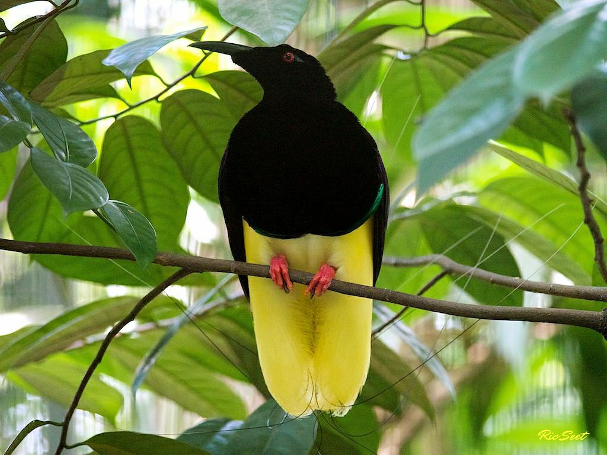
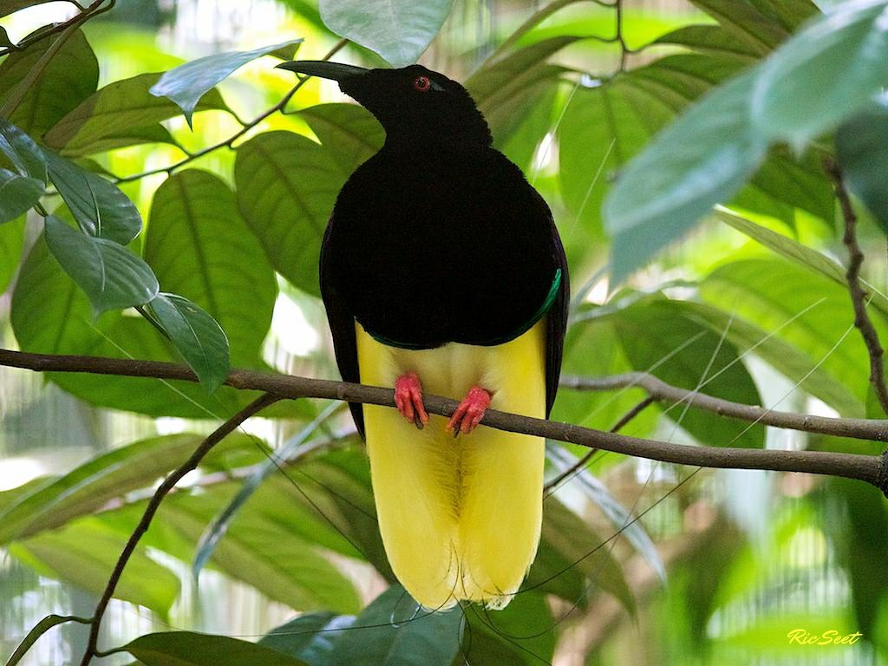

Males: slender, dark birds with very long tails and long, curved bills
Females: brown; same general shape as males but without display feathers
Displays: Shape Shifters—perched males transform their body outline to a long, cometlike oval
Mating system: no pair bonds; males provide no parental care
Range: cloud forests from 5,000 to 10,000 feet in New Guinea

Males: large, brightly colored birds with showy flank plumes
Females: brown; same general shape as males but without display plumes
Displays: shake colorful plumes, typically perform in groups in rainforest canopy
Mating system: no pair bonds; males provide no parental care
Range: lowlands to 6,500 feet of New Guinea and nearby islands

Males: lsmall, very brightly colored birds with long, wirelike tail feathers
Females: same general shape as males but without display feathers, sometimes skin shows males coloration
Displays: males display their bright colors in carefully maintained courts on the ground or tree branches
Mating system: no pair bonds; males provide no parental care
Range: lowlands to 5,000 feet in New Guinea plus one nearby island

Males: large, dark, iridescent birds of the highlands, with long to very long tails
Females: brown; same general shape as males but without display plumes
Displays: lack male’s iridescence; nesting habits poorly known
Mating system: No pair bonds; males provide no parental care
Range: mountains from 5,000 to 11,500 feet in New Guinea

Males: brownish with green breast shield and long white feathers at the wrist of the wing
Females: brown, lacking the male’s specialized display feathers
Displays: groups display in canopy by flying up and down, trailing four white flaglike feathers
Mating system: no pair bonds; males provide no parental care
Range: hill forests of the northern Molucca Islands west of New Guinea
Males: black and iridescent blue, able to totally transform shape
Females: brown, without the male’s specialized display feathers
Displays: Shape Shifters—on a fallen log, males transform their shape into a wide oval with iridescent “smiley face” and hop for females while snapping their wings
Mating system: no pair bonds; males provide no parental care
Range: mid elevations from 5,000 to 6,500 feet in New Guinea

Males: dark, short-tailed birds with red, blue, and yellow facial wattles
Females: look similar to males
Displays: unknown
Mating system: limited observations suggest males provide no parental care
Range: mountains from 5,000 to 8,200 feet in New Guinea
Males: plump, dark, velvety birds with iridescent blue throats
Females: brown, without iridescence
Displays: Shape Shifters—males perch on a stump and “salute” with fanned wings; females participate
Mating system: no pair bonds; males provide no parental care
Range: low to mid elevations in coastal eastern Australia and New Guinea
Males: a black bird with vivid yellow flank plumes with 12 that have unique wiry tips used in display
Females: very different from males
Displays: males climb a pole, turn away from female, wave yellow plumes and brush her with wirelike feathers
Mating system: no pair bonds; males provide no parental care
Range: lowlands and swamps in New Guinea

 
